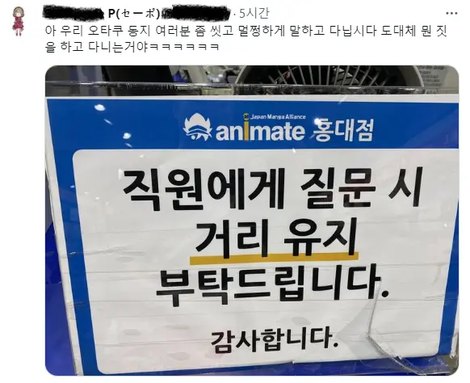

99 · 7 · 4 시간 전 · 원문

여기서 이러는거면 확실한거다
수집 당시 댓글 7개
모치우츠네 · 3 시간 전
팩트) 코로나때 안내문이다
싼디스크 · 3 시간 전
좀 씻어라..
롬곡의눈물 · 3 시간 전
3대600까지 · 3 시간 전
일뽕씹덕 평균이지 뭐
호랭총각 · 2 시간 전
8월에 부산주류박람회 갔다가 줄 잘못 서서 인디게임박람회 줄 서있었는데 진짜 안씻은 냄새나더라나만 맡은게 아니고 와이프도 같이 맡음
아랍국가황토 · 28 분 전
거리유지면 그냥 코로나 아닌가
퍄퍄존슨 · 26 분 전
씻는 거 뿐만 아니고 적절한 사회적 거리를 지키지 못한 게 아닐까?
팩트) 코로나때 안내문이다